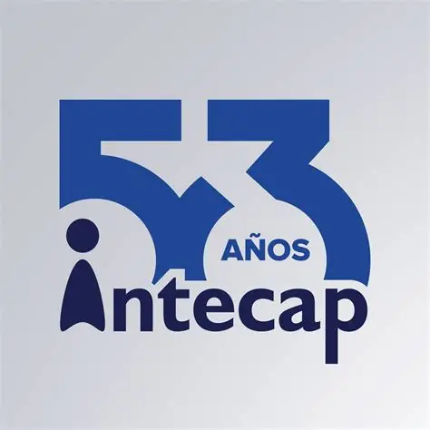

MISIÓN
La misión de INTECAP es formar, capacitar y certificar a personas y empresas en competencias laborales, promoviendo la productividad y el desarrollo económico de Guatemala. Capacitación y Formación: INTECAP se dedica a formar y capacitar a trabajadores en diversas ocupaciones y oficios, proporcionando conocimientos teóricos y prácticos que les permitan desempeñarse eficientemente en el mercado laboral. Certificación de Competencias: La institución certifica las competencias laborales de los trabajadores, asegurando que cumplan con los estándares requeridos por el sector productivo. Asistencia Técnica: INTECAP ofrece asistencia técnica a empresas para mejorar su productividad y competitividad, contribuyendo al desarrollo del país. Innovación y Desarrollo: La misión también incluye la difusión de tecnología de punta y la implementación de programas innovadores que respondan a las necesidades del mercado laboral.
UBICACIÓN
VISIÓN
Ser Institución líder de clase mundial, innovadora en Formación Profesional, Capacitación, Certificación de las competencias laborales y Asistencia Técnica, baluarte de la productividad.VALORES INSTITUCIONALES Son los fundamentos que guían la forma de actuar de los integrantes de Intecap. Los valores institucionales se interpretan como se indica a continuación: Identidad Nacional: Con amor a GUATEMALA y para engrandecerla, trabajamos con convicción en desarrollar el talento humano y la productividad de todos los sectores de la economía nacional; orgullosos de ser guatemaltecos, valoramos nuestra riqueza natural y cultural. Innovación: Generamos soluciones originales, creativas, positivas y exitosas, que incrementan la satisfacción de nuestros clientes y el uso óptimo de los recursos institucionales. Integridad: Vivimos con honestidad, honradez, ética, respeto y responsabilidad; privilegiamos el bien común; cumplimos con leyes y normas, somos congruentes y leales a la institución. Compromiso: Día a día aportamos nuestras capacidades y talentos con pasión y entrega, actuamos concortesía, responsabilidad, efectividad y consistencia, para beneficiar de forma sostenible a las personas, empresas y sectores de la economía nacional.
Valores Institucionales
Los valores institucionales de INTECAP son Identidad Nacional, Innovación, Compromiso e Integridad, que guían su misión de desarrollar talento humano y productividad en Guatemala. Identidad Nacional: INTECAP trabaja con orgullo y convicción por Guatemala, defendiendo y exaltando la identidad nacional, promoviendo el desarrollo del país y de sus habitantes en todos los sectores de la economía. Innovación: Se valora el talento humano que genera soluciones originales, creativas y exitosas. La institución busca superar lo cotidiano, ofreciendo servicios de calidad que marcan una diferencia positiva y satisfacen las necesidades de sus clientes. Compromiso: Cada acción en INTECAP se realiza con responsabilidad, ética y puntualidad, buscando resultados superiores a los esperados. Este compromiso se refleja en el bienestar de las personas, empresas y la sociedad guatemalteca. Integridad: La institución actúa con honestidad, honradez y ética, cumpliendo con leyes y normas, respetando a las personas y siendo congruente y leal a la organización. Aplicación de los Valores Estos valores se aplican en los servicios de capacitación, asistencia técnica y certificación laboral, asegurando la mejora continua, la eficiencia y la efectividad en beneficio de los participantes y sectores productivos del país. Además, forman parte del Código de Ética de INTECAP, que establece un marco de conducta para promover una cultura ética institucional y prevenir la corrupción.
